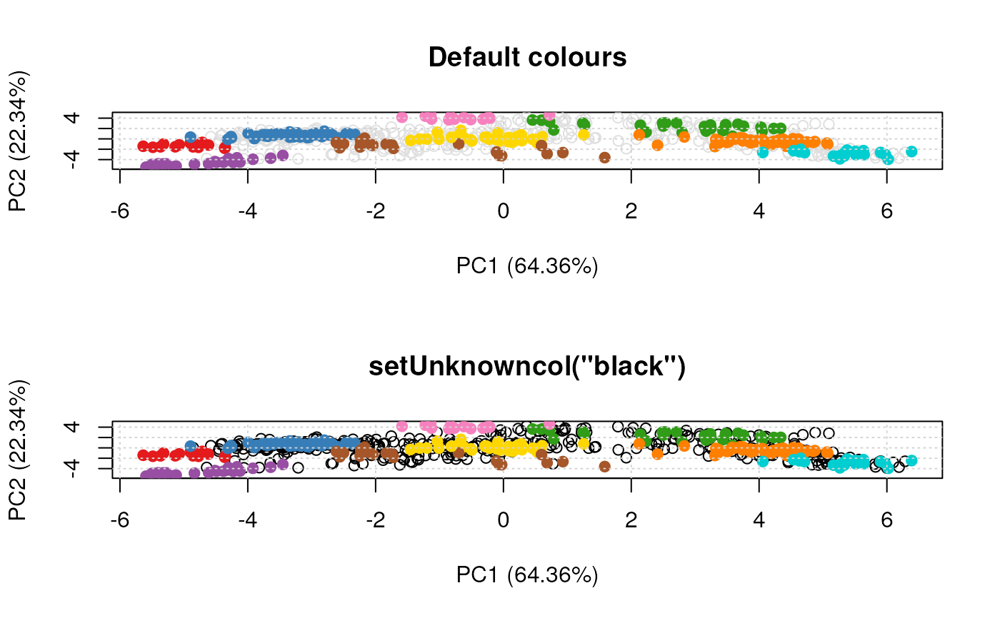

These functions allow to get/set the colours and point character that are used when plotting organelle clusters and unknown features. These values are parametrised at the session level. Two palettes are available: the default palette (previously Lisa's colours) containing 30 colours and the old (original) palette, containing 13 colours.
setLisacol()
getLisacol()
getOldcol()
setOldcol()
getStockcol()
setStockcol(cols)
getStockpch()
setStockpch(pchs)
getUnknowncol()
setUnknowncol(col)
getUnknownpch()
setUnknownpch(pch)| cols | A vector of colour |
|---|---|
| pchs | A vector of |
| col | A colour |
| pch | A |
The set functions set (and invisibly returns)
colours. The get functions returns a character
vector of colours. For the pch functions, numerics
rather than characters.
Laurent Gatto
## defaults for clusters
getStockcol()
#> [1] "#E41A1C" "#377EB8" "#309C17" "#FF7F00" "#FFD700" "#00CED1" "#A65628"
#> [8] "#F781BF" "#984EA3" "#9ACD32" "#B0C4DE" "#00008A" "#FDAE6B" "#EBB7BE"
#> [15] "#3F8F8F" "#CF9802" "#6A51A3" "#21E8AC" "#0000FF" "#1D7A3E" "#BF2A6B"
#> [22] "#CD5B45" "#808000" "#F21D56" "#67000D" "#7A0C79" "#93EDF5" "#A66A6A"
#> [29] "#0E438A" "#DBBCF7"
getStockpch()
#> [1] 19 1 15 0 17 2 18 5 7 9 13 3 4 8
## unknown features
getUnknownpch()
#> [1] 21
getUnknowncol()
#> [1] "#E0E0E0"
## an example
library(pRolocdata)
data(dunkley2006)
par(mfrow = c(2, 1))
plot2D(dunkley2006, fcol = "markers", main = 'Default colours')
setUnknowncol("black")
plot2D(dunkley2006, fcol = "markers", main = 'setUnknowncol("black")')

getUnknowncol()
#> [1] "black"
setUnknowncol(NULL)
getUnknowncol()
#> [1] "#E0E0E0"
getStockcol()
#> [1] "#E41A1C" "#377EB8" "#309C17" "#FF7F00" "#FFD700" "#00CED1" "#A65628"
#> [8] "#F781BF" "#984EA3" "#9ACD32" "#B0C4DE" "#00008A" "#FDAE6B" "#EBB7BE"
#> [15] "#3F8F8F" "#CF9802" "#6A51A3" "#21E8AC" "#0000FF" "#1D7A3E" "#BF2A6B"
#> [22] "#CD5B45" "#808000" "#F21D56" "#67000D" "#7A0C79" "#93EDF5" "#A66A6A"
#> [29] "#0E438A" "#DBBCF7"
getOldcol()
#> [1] "#E41A1C" "#377EB8" "#4DAF4A" "#984EA3" "#FF7F00" "#FFFF33" "#A65628"
#> [8] "#F781BF" "#999999" "#333333" "#A021EF" "#008A45" "#00008A"